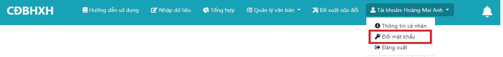
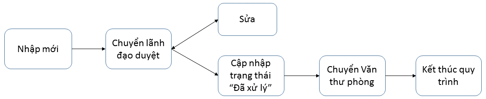
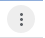
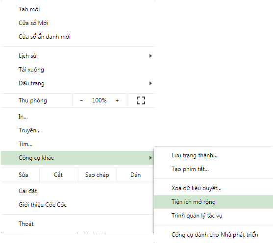
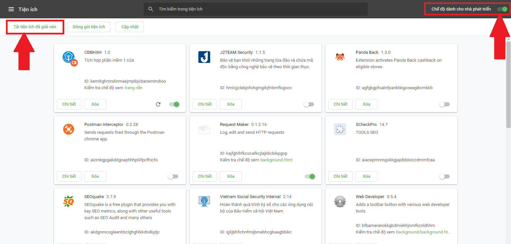
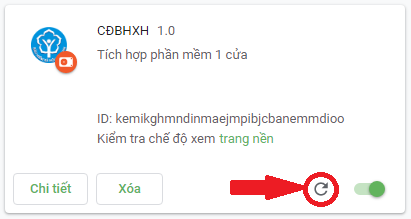

I. THAO TÁC SỬ DỤNG CHUNG
1) Đăng nhập
Truy cập chính xác vào địa chỉ: http://quangtt-cs/cdbhxh hoặc http://10.1.215.222/cdbhxh trên thanh địa chỉ của trình duyệt.

Giao diện đăng nhập
Tên đăng nhập: bao gồm tên + những chữ cái đầu tiên của họ và tên đệm viết liền không dấu với nhau.
VD: Hoàng Thị Tuyết Mai => tên đăng nhập: maihtt.
Mật khẩu: Mặc định 123456 (phải đổi mật khẩu mới sử dụng được).
2) Đổi mật khẩu
Nhấn vào mục Tài khoản trên thanh menu, chọn menu con "Đổi mật khẩu".
Menu

Giao diện đổi mật khẩu
Mật khẩu cũ: Nhập mật khẩu hiện tại.
Mật khẩu mới: Nhập mật khẩu mới muốn thay đổi.
Xác nhận mật khẩu mới: Nhập lại mật khẩu mới.
Sau khi nhập đầy đủ theo yêu cầu, nhấn Xác nhận để hệ thống kiểm tra và tiến hành đổi mật khẩu. Nếu đổi mật khẩu thành công, hệ thống sẽ tự động chuyển hướng sang trang chủ (hiện tại đang là trang nhập dữ liệu báo cáo tuần).
II) QUẢN LÝ VĂN BẢN
1) Quản lý phiếu trả
1.1) Giới thiệu tổng quan
Hiện nay, quy trình quản lý Phiếu trả hồ sơ tại Phòng Chế độ BHXH được quản lý bằng phần mềm Excel thực hiện như sau: Sau khi Tiếp nhận hồ sơ từ Phòng TN và TKQ hoặc BHXH quận (huyện) -> chuyển cán bộ thụ lý kiểm tra tính pháp lý của hồ sơ. Trường hợp hồ sơ chưa đủ cơ sở để giải quyết thì lập dự thảo Phiếu trả hồ sơ -> Trình Lãnh đạo ký -> chuyển Văn thư của phòng lấy số phiếu trả, đóng dấu -> Lưu 01bản chính tại Văn thư của phòng , trả 01 Phiếu trả cho Phòng TN và TKQ hoặc BHXH quận (huyện). Tuy nhiên, trong quá trình thực hiện, phát sinh một số trường hợp như sau:
- Phiếu trả quản lý bằng chương trình Excel bằng máy tính đơn nên chưa đáp ứng được tối ưu nhu cầu sử dụng của người dùng như tra cứu các thông tin, dữ liệu quản lý hay bị mất...
- Số phiếu trả hồ sơ quản lý bằng tay nên dẫn đến trùng số...
- Lãnh đạo phòng muốn kiểm tra lý do vì sao phải trả hồ sơ hoặc đã trả về quận (huyện) nào.. thì phải rút phiếu trả gốc.
Để đảm bảo việc quản lý Phiếu trả hồ sơ Phòng Chế độ BHXH được thuận tiện, nhanh chóng, chính xác, chúng tôi đã nghiên cứu: phần mềm quản lý Phiếu trả hồ sơ được thiết kế bằng ngôn ngữ lập trình HTML, CSS, JS, PHP để bổ sung các tiện ích:
+ Các dữ liệu cần thiết như: phát sinh số phiếu trả hồ sơ tự động tăng dần, lý do của phiếu trả hồ sơ, lãnh đạo phê duyệt, trùng số sổ BHXH, trùng họ và tên, bổ sung tính năng phát hiện trùng số sổ BHXH, họ và tên người hưởng đã trả hồ sơ bao nhiêu lần và nội dung đã trả hồ sơ...
+ Tổng hợp báo cáo kết quả số lượng Phiếu trả hồ sơ của từng cán bộ và từng Lãnh đạo theo thời gian cụ thể như 1 ngày, 1 tuần, 1 tháng, 1 năm....
+ Tổng hợp báo cáo kết quả số lượng Phiếu trả hồ sơ của từng quận, huyện, thị xã theo thời gian cụ thể như 1 ngày, 1 tuần, 1 tháng, 1 năm.... để làm căn cứ cho cán bộ chuyên quản và Lãnh đạo phòng chấm điểm thi đua theo quý cho các quận, huyện, thị xã.
+ Phần mềm chạy trên nền tảng Web nên người dùng không phải cài đặt phần mềm.
+ Không lo mất dữ liệu do hỏng phần cứng hoặc virus, ...

Menu
Nhấn vào mục Quản lý văn bản trên thanh menu chọn menu con "Phiếu trả"
Nhập dữ liệu cần tìm vào các trường dữ liệu tương ứng và nhấn nút Tìm kiếm, dữ liệu các văn bản tương ứng sẽ hiển thị vào bảng phía dưới.

Giao diện sử dụng
1.2) Quy trình xử lý
Lưu ý: Đối với 1 số phiếu trả sau khi chuyển lãnh đạo phòng có thể ko cần trả nữa thì nhấn nút  để tiến hành hủy đối với những phiếu trả đang dự thảo.
để tiến hành hủy đối với những phiếu trả đang dự thảo.
1.3) Thêm mới
Nhấn nút  nếu muốn thêm phiếu trả mới, khung nhập phiếu trả mới hiển thị.
nếu muốn thêm phiếu trả mới, khung nhập phiếu trả mới hiển thị.


Giao diện thêm phiếu trả mới
Tùy từng bộ phận sẽ có dữ liệu đầu vào khác nhau, tiến hành nhập dữ liệu vào các trường dữ liệu tương ứng

Sau khi đã nhập đầy đủ dữ liệu => nhấn nút Ghi

Hệ thống đưa ra 1 câu hỏi xác nhận, nhấn OK để ghi dữ liệu hoặc Hủy (Cancel) nếu muốn chỉnh sửa lại hay hủy bỏ.

Góc phải màn hình xuất hiện 1 thông báo màu xanh: Thêm phiếu trả thành công => Quá trình ghi dữ liệu mới đã hoàn tất. Nhấn chuột trái vào thông báo => thông báo sẽ tự động mờ đi trong vòng 3 giây. Nhấn chuột vào  hoặc nút Esc trên bàn phím để đóng khung hiện tại.
hoặc nút Esc trên bàn phím để đóng khung hiện tại.
1.4) Xem và In
Đối với tất cả các nút nhấn Xem và In, Sửa, Đã xử lý, Hủy dự thảo đều có 1 điểm chung là mặc định bị mờ đi, chỉ khi đã chọn 1 phiếu trả cần thao tác thì nút nhấn mới hiển thị, dữ liệu được chọn hiển thị màu xanh nhạt, tùy từng phiếu trả mỗi nút sẽ hiển thị khác nhau.
Chọn phiếu trả cần xem, nhấn nút  , khung xem văn bản hiển thị và nhấn In để chuyển sang trang In rồi In như bình thường.
, khung xem văn bản hiển thị và nhấn In để chuyển sang trang In rồi In như bình thường.

1.5) Sửa
Tương tự phần thêm phiếu trả mới, chọn phiếu trả đang dự thảo cần sửa, nhấn nút  , hộp sửa phiếu trả dạng popup hiển thị, chỉnh sửa dữ liệu theo ý muốn rồi nhấn Ghi, sau khi xuất hiện thông báo màu xanh "Cập nhập phiếu trả thành công" thì có chuyển sang phần In bằng nút In bên cạnh.
, hộp sửa phiếu trả dạng popup hiển thị, chỉnh sửa dữ liệu theo ý muốn rồi nhấn Ghi, sau khi xuất hiện thông báo màu xanh "Cập nhập phiếu trả thành công" thì có chuyển sang phần In bằng nút In bên cạnh.

1.6) Cập nhập trạng thái
Đối với phiếu trả đang dự thảo, sau khi đã chỉnh sửa những nội dung phiếu trả phù hợp, chuyển lãnh đạo phòng đã duyệt, ký và đóng dấu thì tiến hành cập nhập trạng thái cho phiếu trả và chuyển sang bộ phận văn thư phòng để lưu trữ.
- Chọn phiếu trả cần cập nhập trạng thái, nhấn nút  , hệ thống xuất hiện thông báo xác nhận, nhấn OK để đồng ý cập nhập hoặc Hủy (Cancel) để Hủy bỏ.
, hệ thống xuất hiện thông báo xác nhận, nhấn OK để đồng ý cập nhập hoặc Hủy (Cancel) để Hủy bỏ.
III) Tiện ích mở rộng
1) Mục đích sử dụng
Được tích hợp phần mềm tiếp nhận hồ sơ giúp cho việc quản lý, thao tác và xử lý dữ liệu nhanh gọn, đơn giản hơn.
2) Cài đặt
- Click vào đây để tải tiện ích đã nén về máy
- Giải nén file vừa tải về vào 1 vị trí tùy chọn.
- Mở trình duyệt chrome hoặc cốc cốc click vào biểu tượng nằm góc trái trên cùng đối với trình duyệt Cốc Cốc hoặc  nằm góc phải trên cùng đối với trình duyệt Chrome chọn "Công cụ khác" rồi chọn "Tiện ích mở rộng" như hình dưới
- Kích hoạt vào tùy chọn "Chế độ dành cho nhà phát triển" sau đó Click vào nút "Tiện ích đã giải nén"
- Chọn thư mục vừa bung file nén có tên "cdbhxh_extension" rồi chọn Select Folder
- Nếu màn hình xuất hiện tiện ích CĐBHXH như hình dưới có nghĩa đã cài đặt thành công
